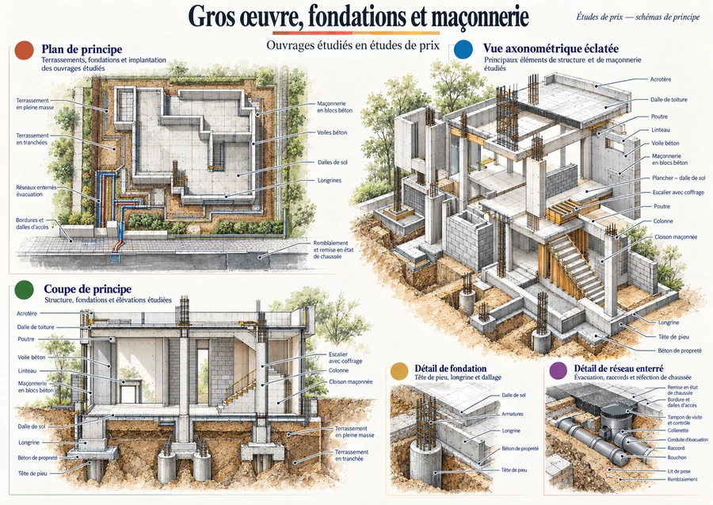
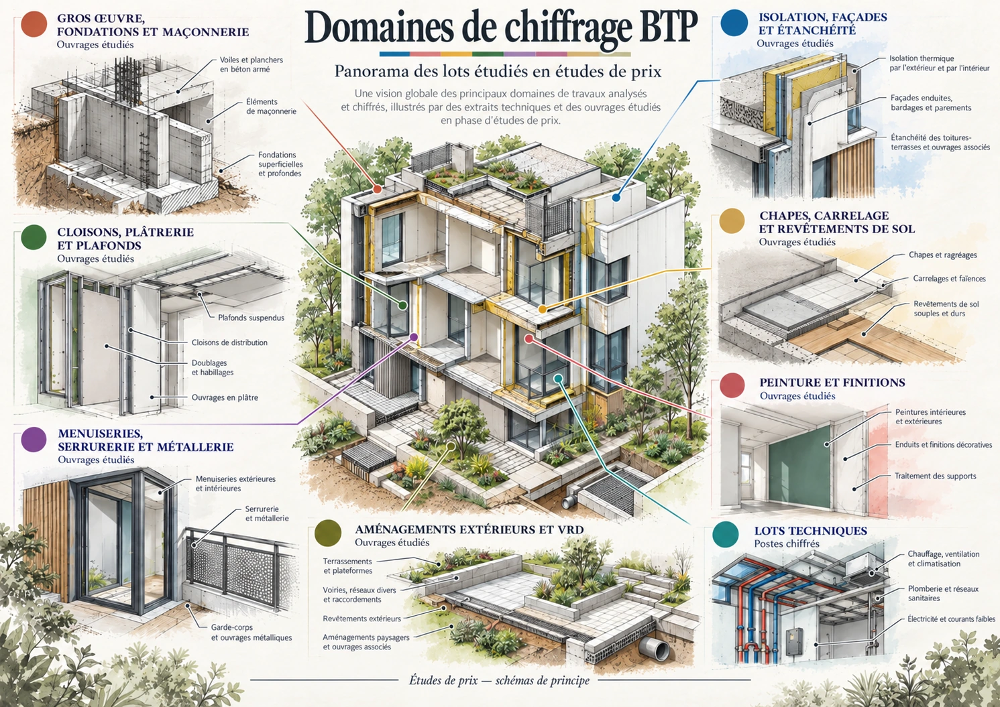
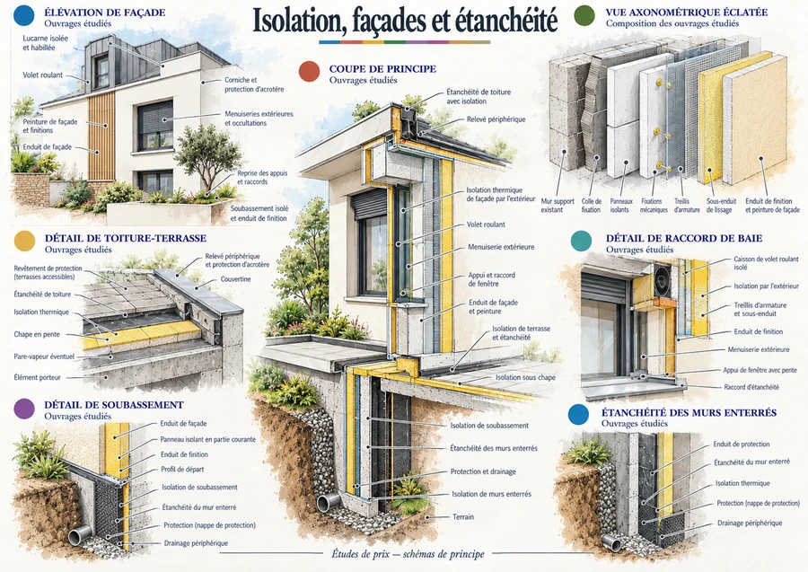
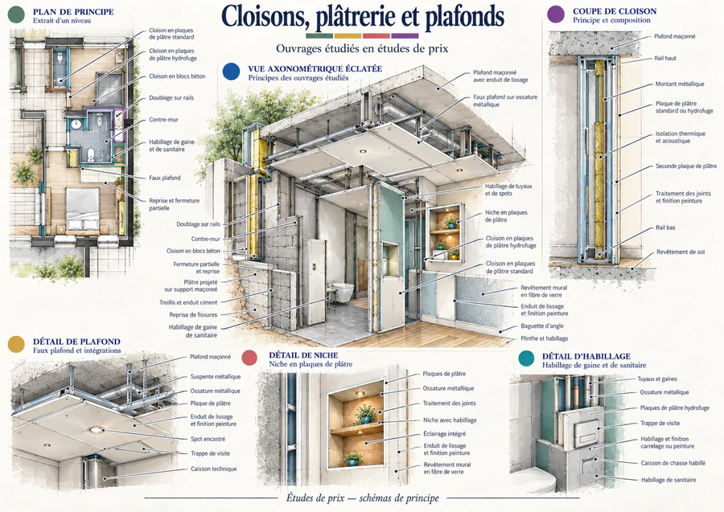
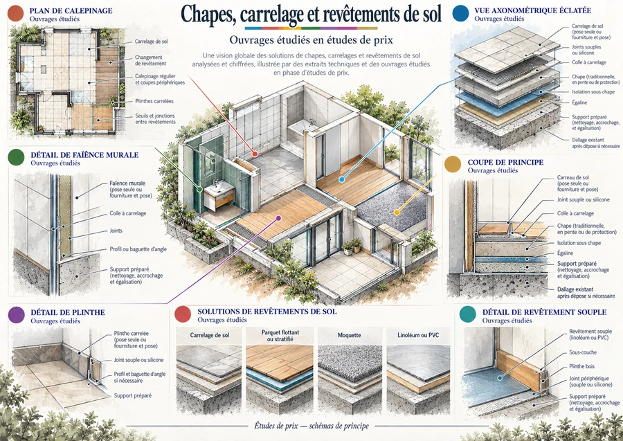
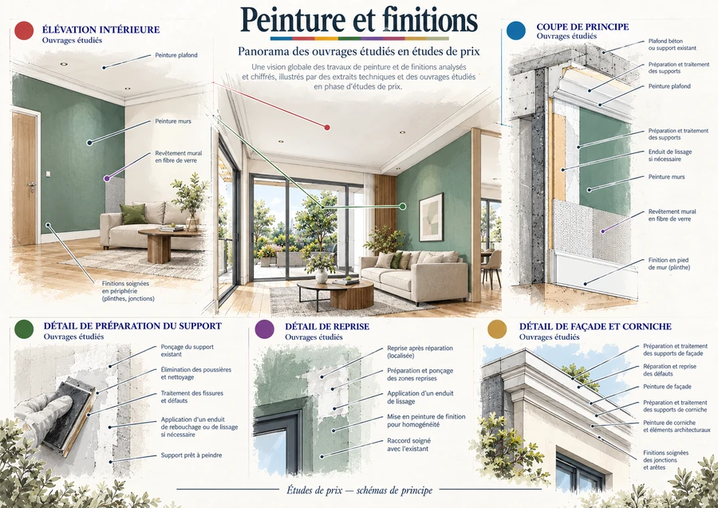
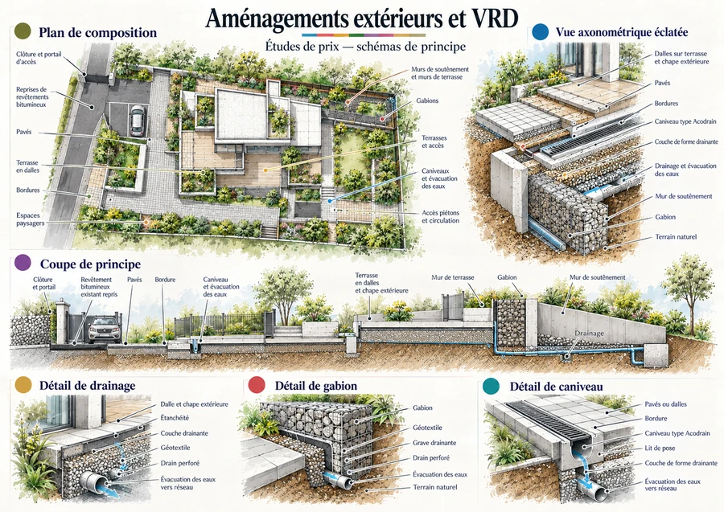
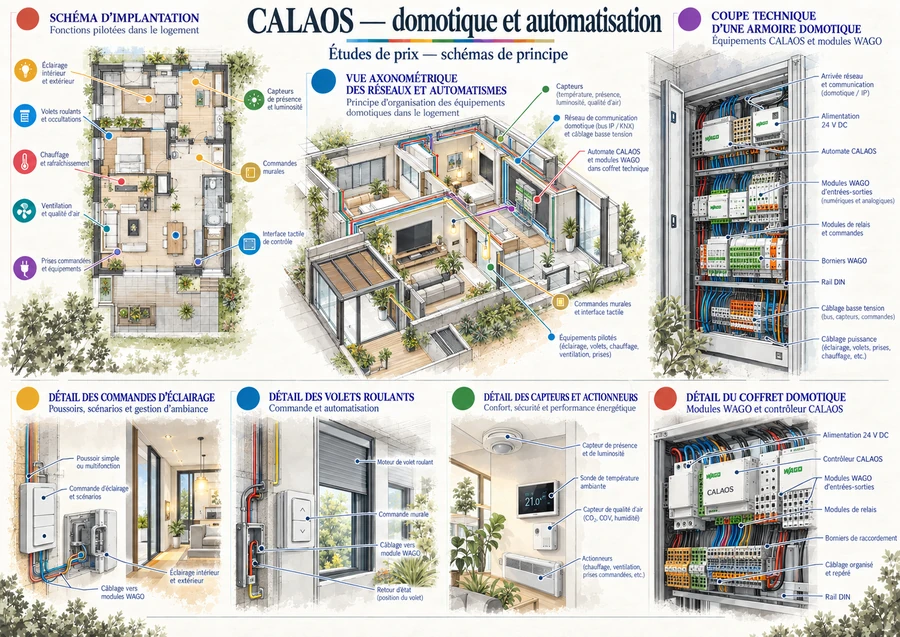

Gros œuvre,
fondations
& maçonnerie
Terrassements, fondations, béton armé, maçonnerie et réseaux enterrés étudiés dans le cadre de dossiers de chiffrage.
Voir la planchePortfolio professionnel
Bâtiment & construction
Du plan
au prix.
Comprendre les ouvrages,
décomposer les prestations,
construire le chiffrage.
Une sélection de domaines étudiés et de méthodes de chiffrage rencontrés au cours de mon parcours en bureau d’études et études de prix.
Les principaux domaines de travaux que j’ai étudiés ou chiffrés. Les illustrations sont des schémas de principe et ne représentent pas des travaux exécutés.

Six familles de travaux et une étude d’automatismes. Chaque planche présente des ouvrages et des détails rencontrés en phase d’étude.

Terrassements, fondations, béton armé, maçonnerie et réseaux enterrés étudiés dans le cadre de dossiers de chiffrage.
Voir la planche
Isolation extérieure, façades, soubassements, raccords, terrasses et étanchéité étudiés en phase de prix.
Voir la planche
Cloisons, doublages, faux plafonds, niches, habillages et travaux de finition associés.
Voir la planche
Chapes, préparation des supports, carrelage, faïence et différents revêtements de sol.
Voir la planche
Préparation des supports, peintures intérieures et extérieures, reprises et finitions.
Voir la planche
Pavés, bordures, terrasses, murs, gabions, drainage, caniveaux et ouvrages extérieurs.
Voir la planche
Étude d’une architecture domotique basée sur CALAOS et des équipements WAGO : automatismes, commandes, capteurs, éclairage et volets roulants.
Une expérience d’étude technique autour des automatismes du bâtiment.
Voir la plancheCes planches illustrent des domaines d’étude et de chiffrage. Elles ne constituent ni des plans d’exécution ni des validations de dimensionnement.
Un prix se construit à partir d’un ouvrage compris, d’une quantité vérifiée et d’une prestation clairement définie.
Lecture technique · Décomposition · Comparaison
Lecture de plans, relevés et repérage par zone. Décomposition en surfaces, longueurs, volumes et unités.
Analyse du périmètre et application des prix unitaires : fourniture seule, pose seule ou fourniture et pose.
Fournitures, main-d’œuvre, matériel, locations et sous-traitance. Analyse des consommations et des rendements lorsqu’ils sont disponibles.
Consultation de fournisseurs et de sous-traitants, comparaison des offres et des variantes selon les critères économiques et techniques.
Déboursé sec, frais généraux, marge et prix de vente. Synthèse HT, TVA et TTC dans les dossiers concernés.
Mon parcours associe les métrés, le chiffrage et le travail en bureau d’études. Une même attention aux détails, aux quantités et à l’organisation des informations.
Je souhaite évoluer vers davantage de suivi économique et technique, puis de gestion de projet, en m’appuyant sur cette expérience.
2019 — 2024
Études de coffrage de dalles et d’étaiement, plans de rotation et préparation des listes de matériels.
2018 — 2019
Métrés, chiffrage et suivi économique. Structuration de tableaux de facturation et réalisation de plans de suivi.
Outils & formation
AutoCAD · Revit · Tableurs
Un parcours de formation en étude et économie de la construction.